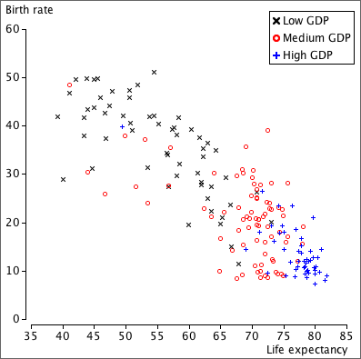

Groups of 'individuals'
If the' individuals' that are represented by crosses on a scatterplot can often be split into different groups, the crosses can be drawn with different symbols or in different colours to represent the group membership.
For example, the diagram below shows the birth rates and life expectancies of all countries in the world, split into 3 groups by their GDP per capita.
